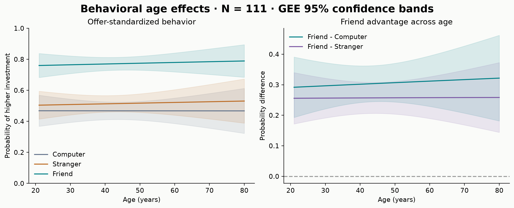
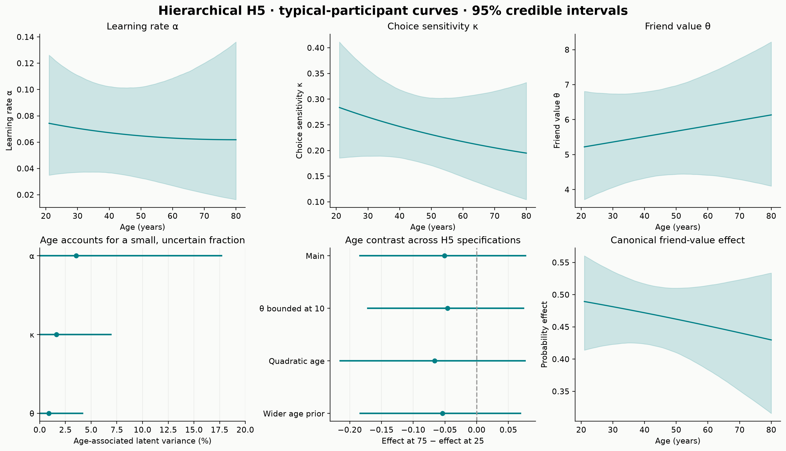
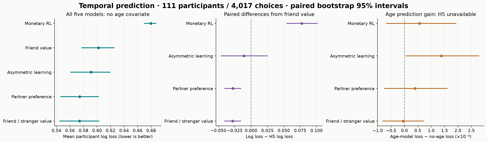
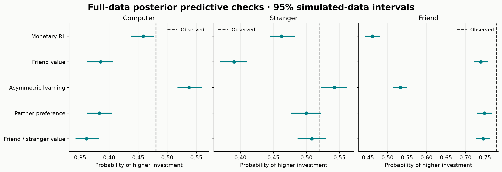
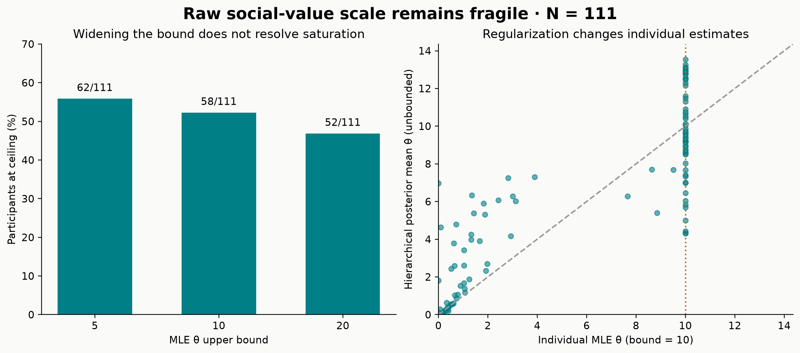
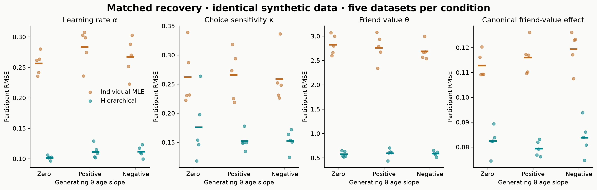

Accepted-fit review · 32 of 34 fits pass. H4 inference and H5 age-model held-out scoring are excluded. Full finalization remains incomplete.
Numerical report and limitations · Click a figure for its vector PDF.

Bands are pointwise GEE 95% confidence intervals, standardized over empirical offers. The cross-sectional age association is not an individual aging trajectory.

Curves transform the population location at each age (zero participant random effect), not the average across all participant random effects. Bands are pointwise 95% posterior credible intervals. The canonical effect turns friend value on versus off at belief P=.5, standardized over empirical offers; it is not the observed friend-minus-computer contrast. Variance fractions are on each parameter’s latent scale, not behavioral R². Sensitivity intervals show the age-75 minus age-25 canonical effect.

Each participant has equal weight. Intervals are percentile intervals from 5,000 participant bootstrap samples, with seed 20260925; contrasts resample paired scores. These quantify participant sampling variability conditional on fitted models, not posterior credible intervals or refitting uncertainty. All five no-age models use the same 4,017 held-out choices. H5 training-age is excluded. Prediction updates beliefs as feedback arrives while keeping the training parameter posterior fixed.

Dots and intervals summarize simulated datasets from full-data age models, including posterior uncertainty; dashed lines show observed equal-participant means. A held-out advantage does not ensure adequate absolute fit. Intervals are pointwise descriptive checks across several model/partner combinations.

The right panel compares different estimators and constraints. Shrinkage and a finite hierarchical estimate do not prove that the individual raw θ parameter is identified.

Every dot is one complete synthetic dataset (111 participants); short horizontal lines are means across five datasets per condition. The two estimators see identical data. Five datasets per condition are too few for precise calibration or power estimates, and this is not simulation-based calibration.